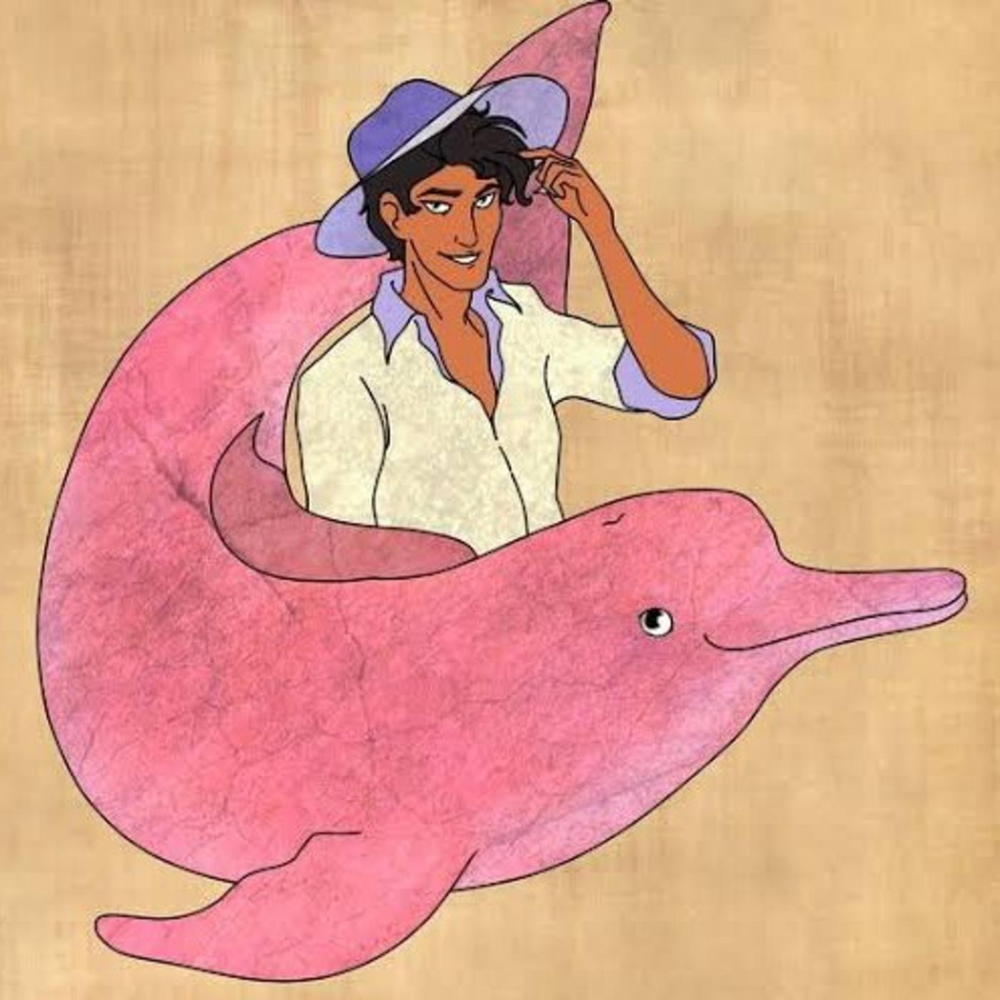

Meu primeiro post
Por:Yolanda Calegari
Bem-vindos ao meu primeiro blog! Aqui vou compartilhar conhecimentos sobre a lenda do boto cor de rosa

Por:Yolanda Calegari
Bem-vindos ao meu primeiro blog! Aqui vou compartilhar conhecimentos sobre a lenda do boto cor de rosa